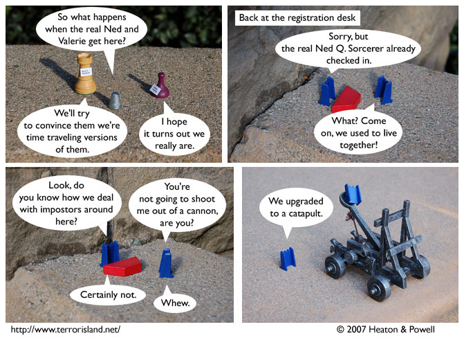

Strip #121
— Wednesday, March 21, 2007
The moon is a harsh catapult
Notes, Thoughts, &c.
Ben’s Notes
I’m not really sure if a catapult counts as an upgrade from a cannon. But then, I didn’t get in to any moon colleges, so I probably don’t know what I’m talking about.
Lewis’s Notes
Some people have been asking whether every policy of moon-based colleges involves cannons and the like. Well, Center of the Earth University policy was written by a group of people who considered the essense of education to be moving rapidly through the air, as a projectile. These are not retributivist flingings, nor even used as deterrent; they are meant to be rehabilitative learning experiences.